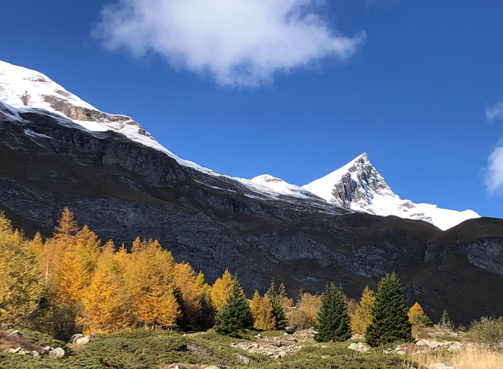

Last Larch works at the edge of what is still possible. We build tools, models and frameworks for organizations, communities and countries to navigate climate risk and societal change.
Practical tools and strategic guidance for organisations planning through climate disruption, ecological transition, and long-term systemic risk. We take inspiration from the alpine larch (Larix lyallii), a tree that does not just survive where other trees fail — it thrives there. The larch holds firm in thin air and biting frost; a sentinel at the treeline. In the face of a changing climate, resilience isn't about avoiding the storm, it is about maintaining the structural integrity to remain upright when the gale is at its peak.
Climate strategy is not just about weathering the storm. It is about finding the brilliance in the transition and turning the necessity of change into a period of unprecedented value and inspiration.